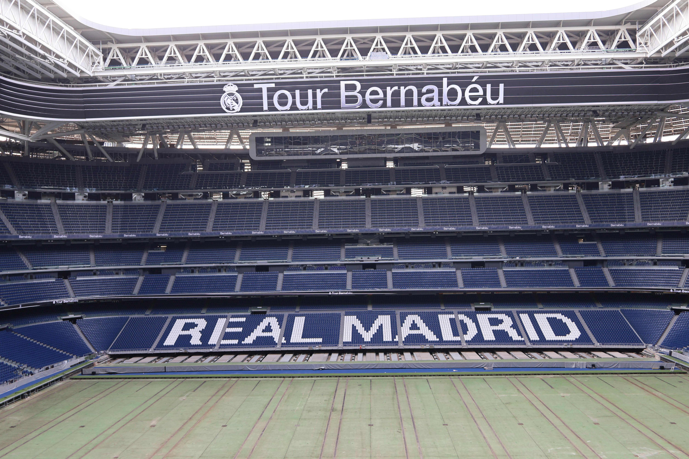
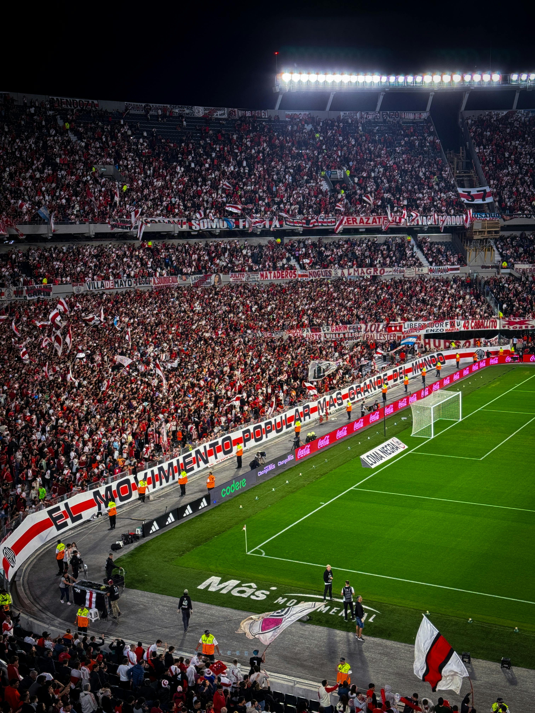
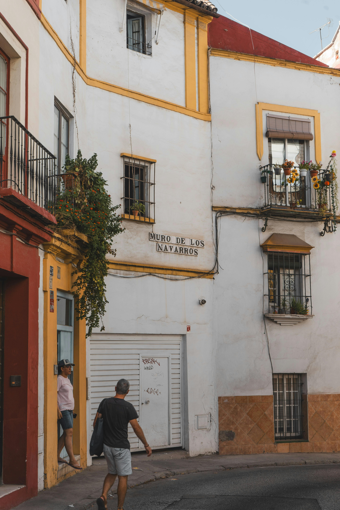
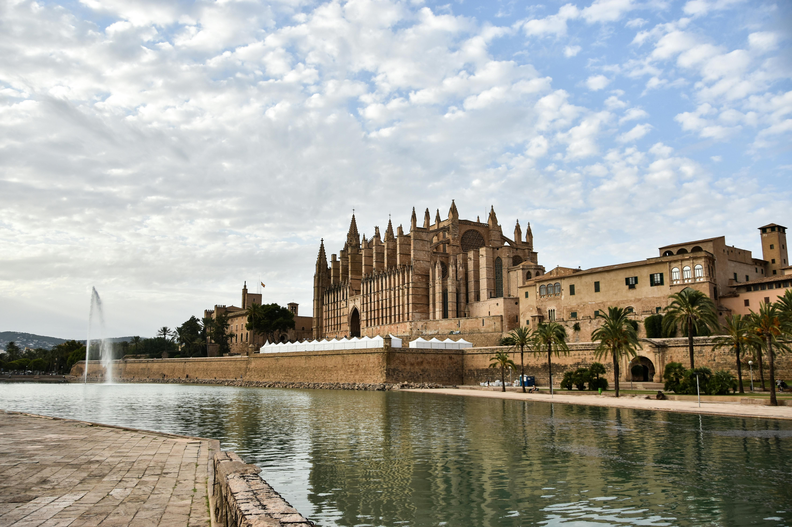
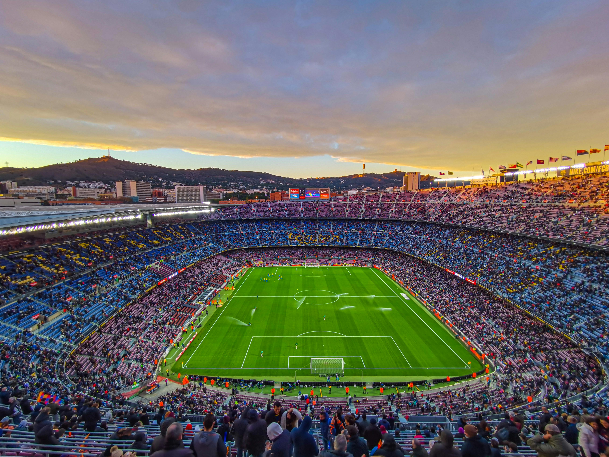

Day by Day

Days 1–2 · Madrid · The Capital of Football
Real Madrid & the Bernabéu Cathedral
There is no more storied club on earth. The Bernabéu is not a stadium — it is the place where football became mythology. Enter it and feel the weight of fourteen Champions League trophies bearing down on you.
10:00
Bernabéu Tour — the renovated cathedralThe freshly rebuilt Santiago Bernabéu now seats 85,000 and includes a retractable pitch, a rooftop walkway and a museum that traces Real's dynasty from Di Stéfano to Bellingham. The trophy room alone takes an hour.
13:00
Cervecería Alemana, Sol — the writer's barHemingway's Madrid haunt. Dark wood, cold Mahou on tap, a plate of jamón ibérico. Football arguments at every table.
20:00
Real Madrid vs Atlético — La Liga night matchThe Madrid derby. 85,000 white shirts igniting at every touch of Vinícius. This is the reason you flew. Arrive an hour early for the Bernabéu atmosphere at its most electric.

Day 3 · Madrid · The Other Half
Atletico's Colchoneros & Retiro Park
The red and white half of Madrid. Atletico are the counter-argument — working class, defiant, maddening. The Metropolitano is newer and louder than the Bernabéu. Understanding both is understanding Madrid.
09:30
Metropolitano Stadium TourThe Cívitas Metropolitano — opened 2017, capacity 68,000. The acoustic bowl makes it Europe's loudest stadium on a match night. The Atletico museum tells a different story to Real's: of near-misses and last-minute heartbreaks. It's more human for it.
12:00
Retiro Park — Sunday football with madrileñosEvery patch of Retiro fills with informal kickabouts on Sunday. Bring a ball or just watch. The city plays football the way it breathes — without thinking, constantly, beautifully.
19:30
Match viewing at Bar Deportivo, MalasañaA standing-room sports bar where the Atletico ultras watch away games. Cheap Estrella, scarves hanging from every rafter. The debate here after the final whistle will last until 2am.

Days 4–6 · Seville · The Fiercest Derby in the World
El Gran Derbi — Sevilla FC vs Real Betis
There is no football match anywhere on earth with the emotional intensity of El Gran Derbi. It divides families, streets, and neighbourhoods. Seville is the city where football is truly a religion.
10:00
Ramón Sánchez-Pizjuán Stadium TourSevilla FC's ground since 1958. The noise here during European nights is the stuff of legend — the 2006 UEFA Cup final atmosphere still echoes in the stands. The museum covers four UEFA Cups and one of the great managerial dynasties in modern football.
12:30
Benito Villamarín — Real BetisWalk straight from one stadium to the other — they're on opposite sides of the same city, a geography that makes no sense and perfect sense. Betis's ground holds 60,000 green-and-white shirts. The Heliopolitanos faithful are the warmest ultras in Spain.
21:00
El Gran Derbi — match night96 minutes of the most intense football you will ever see in your life. Flares. A wall of noise. Neighbours who won't speak to each other for a week. Afterwards: walk Triana, drink manzanilla, eat pescaíto frito at a bar with no sign.

Day 5 · Seville · Recovery Day
Tapas, Flamenco & Football Philosophising
The day after El Gran Derbi, Seville needs to be walked slowly. The city processes the result through conversation — at every bar, every table, every park bench. Join in, even if you don't speak Spanish. The gestures are universal.
10:00
El Rinconcillo — Spain's oldest bar (1670)Order a tinto de verano at the bar where Sevillanos have debated football for centuries. The bartender keeps your tab in chalk on the wooden counter. Nothing about this place has changed since 1670 and nothing should.
16:00
Barrio de Triana — flamenco originsFlamenco and football share a DNA in Seville — both are working-class, both erupt from the same neighbourhoods, both demand everything from the performer. Watch an intimate tablao in Triana and understand the city's intensity.
20:00
Tapas crawl, Alameda de HérculesBar El Tremendo, Bar Europa, La Azotea — the ritual of moving bar to bar, drink to drink, plate to plate. Order croquetas, carrillada al vino, and espinacas con garbanzos. Eat standing. Never rush.

Days 7–9 · Barcelona · Més Que Un Club
FC Barcelona & the Philosophy of Total Football
FC Barcelona is not a football club. It is a political statement, a Catalan identity, a philosophy of how football should be played. The Spotify Camp Nou — rebuilt and reopened in 2025 — is the world's largest stadium and its most intellectually serious.
09:30
Spotify Camp Nou — the new cathedralRebuilt and reopened in 2025, capacity now 105,000. The museum is the most visited in Spain — Cruyff's revolution, the Guardiola tiki-taka era, Messi's 672 goals. The VIP Tour lets you walk the tunnel, the changing rooms, and pitch-side. Book weeks ahead.
13:00
La Boqueria lunch — footballers' marketEvery Barça player has eaten here. Order a plate of jamón from Pinotxo Bar, a glass of cava, and a cup of the market's ancient counter coffee. Sit outside and watch the city.
17:00
FC Barcelona vs Girona — La LigaCamp Nou in full voice — 105,000 blaugrana. The new roof captures and amplifies the noise until it is physically felt. If Lamine Yamal touches the ball on the right wing, you will understand why Barcelona will always produce football that looks like art.
09:00
La Masia Academy — Cruyff's legacyBook a guided visit to La Masia, Barça's legendary youth academy. The football philosophy taught here — positional play, spatial intelligence, the rondo — produced Xavi, Iniesta, Messi. Walking the pitches where the game was reimagined is unlike any football experience on earth.
11:30
Gràcia neighbourhood — football culture walkThe barrio where Guardiola grew up watching the game. Peñas Culés (Barça fan clubs) open their doors here — small rooms papered with scarves, photos, match programmes from the 1950s. Walk in, order a beer, ask about Cruyff.

Day 10 · Barcelona · Departure
Las Ramblas, Last Croqueta, Last Cerveza
The last morning in Spain is for sitting still. A café con leche, a newspaper open to the sports pages, the specific golden Barcelona light. You leave knowing something about this country that you couldn't have read about.
08:00
Bar Marsella, El Born — the last coffeeThe oldest bar in Barcelona (1820). Absinthe bottles thick with dust, black-and-white photos of players and poets on the walls. Order a café solo and sit until you feel yourself slow down to Spain's pace.
10:30
Barceloneta — final walk by the seaThe city ends at the Mediterranean. Walk the beach, eat your last plate of patatas bravas, buy a Barça shirt at the shop in the port. Catch the airport bus from Plaça Catalunya — it takes 35 minutes.